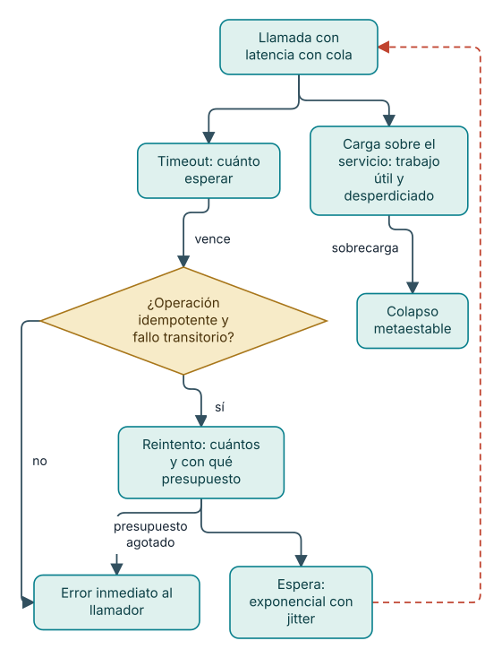
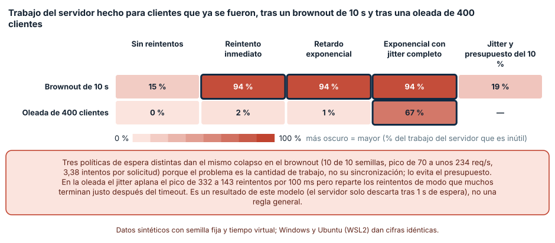
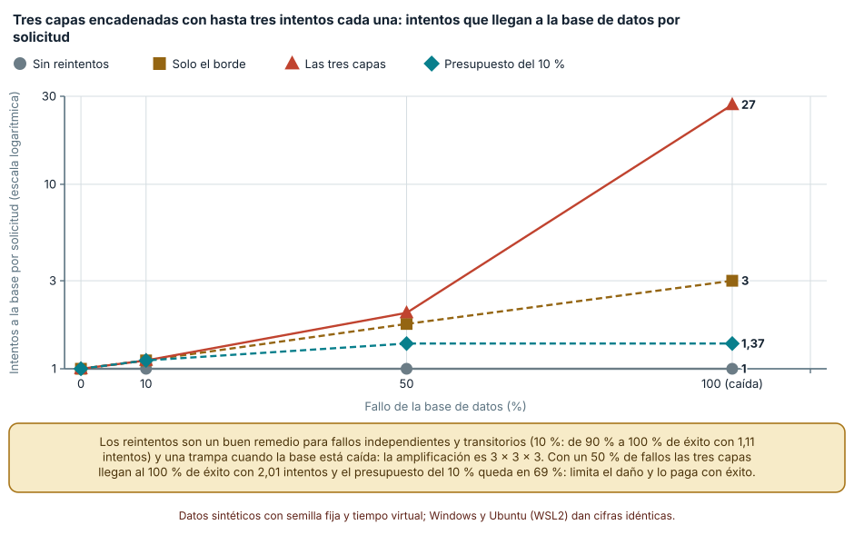
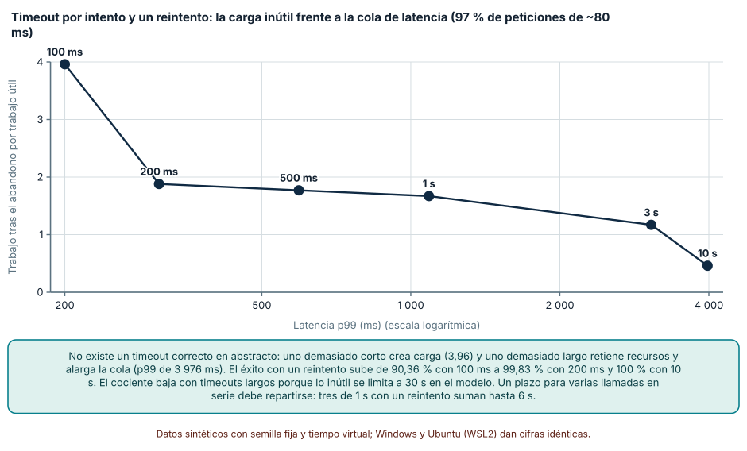

← SE-437 — Perfiles, benchmarks y errores de medición · ↑ Parte 36 · 📚 Índice completo · 🌐 Portal · SE-439 — Circuit breakers, bulkheads y degradación →
Punto profesional y fundamento pedagógico
Punto profesional. La clase existe para que decidas cuánto espera un cliente antes de rendirse, cuántas veces reintenta, cuánto aguarda entre intentos y cuándo no debe reintentar, sabiendo que cada una de esas decisiones multiplica o reduce la carga que recibe un sistema que ya está en dificultades. Los reintentos arreglan los fallos transitorios independientes y empeoran los persistentes: la habilidad es saber cuál es cuál antes de escribir el bucle.
Por qué aparece aquí. Sigue a Perfiles, benchmarks y errores de medición: allí se midió la forma de la distribución de latencias; aquí se decide con esa forma cuánto esperar. Abre el bloque de resiliencia de la Parte 36, que continúa con circuit breakers, bulkheads y disponibilidad. El caso conductor es el cliente de la API de entregas que llama a la base de datos y a un servicio de almacenamiento de archivos.
Error conceptual que debe corregir. Creer que reintentar es «gratis» y que un retardo exponencial con jitter resuelve las tormentas de reintentos: la espera entre intentos reparte la carga en el tiempo y no reduce la cantidad total, y con timeouts cortos y servidores que siguen trabajando para clientes ausentes el sistema colapsa igual.
Secuencia de aprendizaje. Antes de leer los resultados, predices qué política de reintento (inmediato, exponencial, jitter, presupuesto) recupera antes a un servicio tras una degradación de diez segundos y cuántas peticiones llegan a la base de datos cuando fallan tres capas con tres intentos cada una; después simulas diez semillas de cada caso y comparas seis timeouts frente a una distribución con cola. La secuencia usa predicción, explicación propia, contraste y recuperación. ICAP distingue participación de construcción de conocimiento; How People Learn II respalda diseñar la práctica con contextos reales y retroalimentación.
Evidencia de aprendizaje. reintentos-log.md con la predicción, las tres figuras reproducidas, una política de timeouts y reintentos para cada llamada de la API (con su plazo total, su presupuesto y su condición de «no reintentar») y una nota que separe lo medido de lo supuesto.
Límite de la conclusión. Todo ocurre en un simulador de tiempo virtual con cuatro servidores, servicio exponencial y un cliente que se rinde a un timeout fijo; el resultado sobre el jitter es propio de este modelo (el servidor solo descarta trabajo tras una espera de un segundo) y no una regla general. No se midió ninguna red, ningún servicio ni ninguna biblioteca de reintentos real.
Trazabilidad fuente → afirmación
| Fuente primaria u oficial | Afirmación que respalda | Lo que no prueba |
|---|---|---|
| AWS Builders' Library: Timeouts, retries and backoff with jitter | Explica que los reintentos amplifican la carga, que el retardo exponencial con jitter reparte los intentos y que hay que limitar los reintentos por capa. | No demuestra el valor de ninguna política en este simulador. |
| Google SRE: Addressing Cascading Failures | Describe cómo los reintentos y los timeouts mal calibrados provocan fallos en cascada y recomienda presupuestos de reintentos. | No fija los valores para el servicio de entregas. |
| Bronson et al., «Metastable failures in distributed systems» (HotOS 2021) | Define los fallos metaestables: un estado de sobrecarga que se sostiene a sí mismo tras desaparecer el desencadenante, a menudo por reintentos. | No dice cuándo ocurrirá en un sistema concreto. |
| Microsoft Azure Architecture: patrón Retry | Distingue fallos transitorios de persistentes y recomienda reintentar solo operaciones idempotentes con retardo creciente. | No sustituye la prueba del comportamiento propio. |
Antes de empezar
Recupera lo aprendido en SE-437: una latencia tiene una distribución con cola y la comparación exige un protocolo. La pregunta activa es: ¿cuánto debe esperar un cliente, cuántas veces reintentar y qué carga añade cada decisión al servicio que ya está mal?
Prerrequisitos
- Haber completado
SE-437o poder explicar por qué una sola medición de tiempo no basta. - Python 3.11 o posterior; los experimentos usan solo la biblioteca estándar (
random,heapq,math,statistics). - Saber qué es una operación idempotente (se trabajó en la Parte 20).
Problema auténtico
Durante el cierre de un plazo, la base de datos de la plataforma sufrió una degradación de diez segundos: las consultas tardaron tres veces más. Los clientes de la API tenían un timeout de un segundo y reintentaban hasta tres veces sin esperar. En pocos segundos el tráfico hacia la base de datos pasó de 50 a más de 230 solicitudes por segundo; la degradación terminó y la base nunca se recuperó: seguía procesando solicitudes de clientes que se habían rendido hacía un segundo y que ya habían reintentado. El incidente duró cuarenta minutos y se resolvió reiniciando los clientes. El postmortem propuso «añadir retardo exponencial con jitter»; la simulación de esta clase muestra que esa medida, por sí sola, no habría evitado el colapso. Lo que lo evita es limitar la cantidad de reintentos, no su calendario.
Objetivos observables
Al terminar podrás:
- diferenciar un fallo transitorio, uno persistente y uno de sobrecarga y decir qué hace cada política de reintento con cada uno;
- medir la carga que añade un reintento inmediato, uno exponencial, uno con jitter y uno con presupuesto tras una degradación;
- calcular la amplificación de reintentos en capas encadenadas y limitarla con un presupuesto;
- elegir un timeout con la distribución de latencias y justificarlo por éxito, latencia y trabajo desperdiciado;
- repartir un plazo total entre llamadas en serie y decidir qué operaciones no se reintentan.
Mapa conceptual

El mapa muestra un bucle: cada reintento vuelve a cargar el servicio, y si el servicio está sobrecargado el bucle se alimenta a sí mismo. La salida segura es el presupuesto, que corta el bucle.
Temas y por qué importan
| Tema | Por qué cambia una decisión profesional | Evidencia mínima |
|---|---|---|
| Timeouts | Un timeout corto crea carga y uno largo retiene recursos. | Predicción, traza causal y contraejemplo de Timeouts en reintentos-log.md |
| Reintentos e idempotencia | Reintentar una operación que no es idempotente duplica efectos. | Predicción, traza causal y contraejemplo de Reintentos e idempotencia en reintentos-log.md |
| Espera exponencial y jitter | Reparte los intentos pero no reduce su número. | Predicción, traza causal y contraejemplo de Espera exponencial y jitter en reintentos-log.md |
| Presupuestos y amplificación | Cada capa que reintenta multiplica la carga. | Predicción, traza causal y contraejemplo de Presupuestos y amplificación en reintentos-log.md |
| Plazos y propagación | Un plazo total debe repartirse entre las llamadas. | Predicción, traza causal y contraejemplo de Plazos y propagación en reintentos-log.md |
Conceptos y decisiones
1. Timeouts
Un timeout es el tiempo que un cliente espera una respuesta antes de rendirse. No existe un valor correcto en abstracto: depende de la distribución de latencias del servicio. Si es más corto que la cola normal, los clientes se rinden ante respuestas que iban a llegar y el servidor hace el trabajo de todas formas: es trabajo desperdiciado. Si es mucho más largo, los clientes retienen un trabajador, una conexión y memoria mientras esperan una respuesta que quizá no llegue, y una dependencia colgada agota los recursos del llamador. La elección razonable ancla el timeout a un percentil alto de la latencia sana (por ejemplo, un múltiplo del p99,9) y lo ajusta con el plazo total disponible. Hay un problema adicional: el timeout del cliente no cancela el trabajo del servidor. Si el servidor no sabe que el cliente se fue, sigue trabajando, y esa es la raíz de la mayoría de los colapsos.
2. Reintentos e idempotencia
Un reintento vuelve a ejecutar una operación que falló. Es seguro solo si la operación es idempotente: ejecutarla dos veces tiene el mismo efecto que una. Consultar una calificación lo es; crear una entrega no lo es a menos que lleve una clave de idempotencia que el servidor reconozca. Además, solo conviene reintentar los fallos transitorios (una red que parpadea, un nodo que se reinicia): un error de validación o un permiso denegado dará el mismo resultado la próxima vez, y reintentarlo es carga inútil. El caso peligroso es el fallo de sobrecarga, que parece transitorio y no lo es: el servicio falla porque hay demasiadas peticiones y reintentar aumenta precisamente lo que lo hace fallar. Un cliente que no distingue entre «el servidor está caído» y «el servidor está desbordado» responderá a ambos igual y empeorará el segundo.
3. Espera exponencial y jitter
La espera exponencial aumenta el intervalo entre intentos (0,1 s, 0,2 s, 0,4 s…) para dar tiempo al servicio a recuperarse y reducir el ritmo de reintentos. El jitter añade aleatoriedad (por ejemplo, esperar un valor uniforme entre cero y el intervalo exponencial) para romper la sincronización entre clientes: si mil clientes fallaron al mismo instante y todos esperan exactamente 0,4 s, todos vuelven a la vez. El jitter completo reduce el pico de reintentos sincronizados; lo que no hace es reducir el número total de reintentos, ni evitar que sobrecargue al servidor un conjunto de clientes que reintentan de manera constante. Y tiene un efecto menos conocido: una espera aleatoria menor que la media puede devolver el reintento antes de que el servicio haya drenado su cola, lo que en ciertos regímenes empeora el trabajo desperdiciado. La conclusión es que el calendario de los reintentos es un ajuste fino; lo decisivo es cuántos hay.
4. Presupuestos y amplificación
Un presupuesto de reintentos limita la fracción de solicitudes que pueden ser reintentos (por ejemplo, un 10 % de las solicitudes de los últimos diez segundos). Con él, el tráfico adicional queda acotado a 1,1 veces el normal sin importar cuántos intentos permita cada solicitud. La amplificación aparece cuando varias capas reintentan: si el borde reintenta tres veces, el servicio intermedio tres y la capa de datos tres, una sola petición del usuario produce hasta 3 × 3 × 3 = 27 intentos contra la base de datos caída. La política razonable es reintentar en una capa (normalmente la más cercana al usuario o la más cercana al fallo, no ambas) y, en el resto, fallar rápido y devolver el error. Un presupuesto en cada capa es la red de seguridad cuando el diseño no queda tan limpio.
5. Plazos y propagación
Un plazo (deadline) es el instante hasta el que el resultado sigue siendo útil. Si el usuario espera como máximo 1,5 s y la solicitud pasa por tres llamadas en serie con timeouts independientes de 1 s y un reintento cada una, el peor caso es de seis segundos, más de cuatro veces el plazo, y el trabajo de las últimas llamadas se hace para alguien que ya se fue. La propagación del plazo pasa el tiempo restante a cada llamada: la segunda sabe que dispone de lo que quedó tras la primera, y la tercera de lo que quedó tras ambas; si no hay tiempo, falla sin intentarlo. Esto convierte el timeout en una propiedad de la solicitud completa y no de cada llamada, y permite que los servidores descarten trabajo que ya no será útil.
Tormenta tras una degradación y oleada sincronizada
Un servidor con cuatro trabajadores y 50 ms de servicio medio (capacidad de unas 80 solicitudes por segundo) recibe 50 solicitudes por segundo. Entre los 30 y los 40 s el servicio tarda tres veces más. El cliente se rinde a 1 s y reintenta hasta tres veces. El servidor no sabe que el cliente se fue y sigue trabajando. Se comparan cinco políticas con diez semillas cada una. En un segundo escenario, 400 clientes con una tarea programada llaman a la vez en el segundo 60 y el servidor descarta las solicitudes que esperaron más de 1 s.
heapq.heappush(ev, (give + d, i, k + 1, t_log)) # d = 0 | base*2**k | uniform(0, base*2**k)
if len(retry_t) >= 0.1 * max(1, len(first_t)): ... # presupuesto: no más del 10 % de reintentos| Escenario y política | Pico de carga | Intentos por solicitud | Semillas que colapsan | Trabajo inútil |
|---|---|---|---|---|
| Degradación: sin reintentos | 70 req/s | 1,00 | 0 de 10 | 15 % |
| Degradación: reintento inmediato | 235 req/s | 3,38 | 10 de 10 | 94 % |
| Degradación: exponencial | 232 req/s | 3,38 | 10 de 10 | 94 % |
| Degradación: exponencial con jitter | 234 req/s | 3,38 | 10 de 10 | 94 % |
| Degradación: jitter y presupuesto del 10 % | 88 req/s | 1,01 | 0 de 10 | 19 % |
| Oleada: sin reintentos | 14 por 100 ms | 1,00 | 0 de 10 | 0 % |
| Oleada: reintento inmediato | 333 por 100 ms | 1,12 | 0 de 10 | 2 % |
| Oleada: exponencial | 332 por 100 ms | 1,11 | 0 de 10 | 1 % |
| Oleada: exponencial con jitter | 143 por 100 ms | 2,53 | 10 de 10 | 67 % |
Las tres políticas de espera dan el mismo colapso tras la degradación: 94 % del trabajo del servidor es para clientes que ya se fueron y el éxito total cae al 20 %. Solo el presupuesto lo evita, y lo paga con un 87 % de éxito frente al 90 % sin reintentos. En la oleada, el jitter hace lo que promete (reduce el pico de reintentos de 332 a 143 por cada 100 ms) y el resultado, en este modelo, es peor: las diez semillas entran en sobrecarga sostenida con un 67 % de trabajo inútil. La hipótesis coherente con la medición es que el pico sincronizado se descarta barato (el servidor lo cancela al sacarlo de la cola) mientras que los reintentos repartidos llegan justo cuando la cola está al límite del timeout y obligan a hacer trabajo que termina tarde.

Cómo leer la figura. Cada celda es una política en un escenario y su color, el porcentaje de trabajo del servidor hecho para clientes que ya se fueron; el borde grueso marca las celdas en que colapsan las diez semillas. Mira primero que las tres políticas de espera dan 94 % en el brownout y que el presupuesto lo baja a 19 %. Dónde deja de valer: es un resultado de este modelo: con otro tiempo de descarte, otra relación entre el timeout y el servicio o un servidor que cancele trabajo al instante, el jitter ayudaría. Lo que se sostiene es que el calendario de los reintentos no sustituye a su límite.
Amplificación por capas
Tres capas (borde, servicio y base de datos) con hasta tres intentos cada una. Se mide cuántos intentos llegan a la base de datos por cada solicitud del usuario y qué fracción termina bien, para cuatro tasas de fallo de la base y cuatro políticas.
def llamar(nivel):
...
if politica == "solo borde" and nivel > 0: return False
if politica == "presupuesto" and st_l[nivel][1] >= 0.1 * st_l[nivel][0]: return False| Fallo de la base | Sin reintentos | Solo el borde | Las tres capas | Presupuesto del 10 % |
|---|---|---|---|---|
| 100 % (caída) | 1,00 / 0 % | 3,00 / 0 % | 27,00 / 0 % | 1,37 / 0 % |
| 50 % | 1,00 / 49 % | 1,75 / 88 % | 2,01 / 100 % | 1,37 / 69 % |
| 10 % | 1,00 / 90 % | 1,11 / 100 % | 1,11 / 100 % | 1,11 / 100 % |
| 0 % | 1,00 / 100 % | 1,00 / 100 % | 1,00 / 100 % | 1,00 / 100 % |
Cada celda es «intentos hacia la base / solicitudes que terminan bien». Con un 10 % de fallos independientes, reintentar sube el éxito del 90 % al 100 % con solo 1,11 intentos por solicitud: es el caso para el que sirven. Con la base caída, las tres capas envían 27 intentos por solicitud y no obtienen nada. El presupuesto limita el daño a 1,37 y deja pasar menos solicitudes cuando el fallo es parcial (69 % frente a 100 % al 50 %): es el precio de la protección.

Cómo leer la figura. El eje horizontal es el porcentaje de fallo de la base de datos y el vertical, en escala logarítmica, los intentos que llegan a ella por solicitud del usuario; cada línea es una política de reintento. Mira primero el extremo derecho: con la base caída, reintentar en las tres capas llega a 27 y el presupuesto se queda en 1,37. Dónde deja de valer: los fallos del punto del 50 % son independientes entre intentos, lo que casi nunca ocurre en producción (un fallo suele persistir unos segundos) y favorece a los reintentos; el presupuesto del 10 % se evalúa de forma acumulada y no en una ventana deslizante.
Elección del timeout
Se simula una llamada cuya latencia es de 80 ms de mediana en el 97 % de los casos, con una cola del 3 % de media 3 s y un 0,2 % que no responde. Con un reintento al vencer el timeout, se mide el éxito, la latencia y el trabajo que el servidor sigue haciendo tras el abandono, dividido por el trabajo útil.
| Timeout | Éxito con 1 intento | Éxito con reintento | Latencia media / p99 | Trabajo tras el abandono / útil |
|---|---|---|---|---|
| 100 ms | 68,9 % | 90,36 % | 103 ms / 200 ms | 3,96 |
| 200 ms | 95,9 % | 99,83 % | 94 ms / 310 ms | 1,88 |
| 500 ms | 97,2 % | 99,93 % | 102 ms / 594 ms | 1,77 |
| 1 s | 97,6 % | 99,95 % | 114 ms / 1 088 ms | 1,67 |
| 3 s | 98,7 % | 99,98 % | 149 ms / 3 060 ms | 1,17 |
| 10 s | 99,7 % | 100,00 % | 192 ms / 3 976 ms | 0,46 |
Con 100 ms, el 31 % de las primeras llamadas se abandona y por cada unidad de trabajo útil el servidor hace casi cuatro de trabajo para clientes ausentes. Con 10 s, el éxito es total y el p99 llega a casi cuatro segundos, y el cliente retiene sus recursos todo ese tiempo. Un valor de 200 a 500 ms logra el 99,8 % o más con un p99 inferior a 600 ms. El cociente baja con los timeouts largos en parte porque el modelo limita a 30 s el trabajo que sigue tras el abandono.

Cómo leer la figura. Cada punto es un timeout, rotulado, con la latencia p99 en el eje horizontal (escala logarítmica) y el trabajo inútil por cada trabajo útil en el vertical. Mira primero que la curva baja de izquierda a derecha: lo que se gana en carga con un timeout largo se paga con una cola de latencia más larga. Dónde deja de valer: la distribución es un supuesto del autor (3 % lentas de media 3 s, 0,2 % colgadas) y el reintento se hace con éxito independiente; en un fallo persistente el éxito del reintento sería casi cero. Un plazo total de 1,5 s con tres llamadas en serie y un reintento cada una puede llegar a 6 s en el peor caso, y la propagación del plazo lo impide.
Definiciones de trabajo
- timeout: tiempo máximo que un cliente espera una respuesta antes de rendirse.
- idempotencia: propiedad de una operación cuya repetición produce el mismo efecto que una sola ejecución.
- jitter: variación aleatoria del tiempo de espera entre reintentos para evitar la sincronización.
- presupuesto de reintentos: límite a la fracción de solicitudes que pueden ser reintentos.
- fallo metaestable: estado de sobrecarga que se sostiene por sí mismo después de desaparecer su causa inicial.
Las definiciones son operativas para la API de entregas. No convierten términos con una historia más amplia en sinónimos y deben contrastarse con la documentación primaria enlazada al final.
Ejemplo mínimo
El fragmento calcula la amplificación de tres capas con tres intentos cada una sobre un servicio caído. Antes de ejecutarlo, predice cuántos intentos llegan a la base de datos.
intentos = 1
for capa in range(3):
intentos *= 3
print(intentos)Llegan 27 intentos por solicitud del usuario. Registra versión de Python, comando y salida; después limita el reintento a la capa exterior y comprueba que el valor baja a 3.
Ejemplo profesional
El equipo define la política de la API. La llamada de lectura a la base de datos (consultar una calificación) es idempotente y tiene un timeout de 500 ms; se reintenta una vez, con espera de 100 ms más jitter, solo en el cliente del servicio de lectura. La creación de una entrega lleva una clave de idempotencia generada en el cliente y se reintenta como máximo dos veces con un presupuesto del 10 % por minuto. El plazo total de la solicitud es de 1,5 s y se propaga en una cabecera: cada servicio resta el tiempo consumido y falla sin intentar si queda menos de 100 ms. La capa de datos nunca reintenta por sí misma. Los servidores descartan las solicitudes cuyo plazo ya venció. Cada política queda en una tabla con su motivo y una prueba que inyecta una degradación de diez segundos y comprueba que el pico de carga no supera 1,5 veces la base. Compara con el comportamiento de antes: tres capas con tres intentos y un timeout de un segundo.
Práctica guiada
- Implementa el simulador de la clase con
heapq: cuatro trabajadores, 50 ms de servicio y clientes que se rinden a 1 s. - Predice qué política recupera antes tras una degradación de 10 s y escríbelo antes de medir.
- Compara reintento inmediato, exponencial, con jitter y con presupuesto en 10 semillas y cuenta cuántas colapsan.
- Simula tres capas con tres intentos y calcula los intentos que llegan a la base para cuatro tasas de fallo.
- Mide seis timeouts contra una distribución con cola y calcula éxito, latencia y trabajo desperdiciado.
- Redacta la política de la plataforma: qué se reintenta, quién reintenta, con qué presupuesto y con qué plazo propagado.
- Entrega
reintentos-log.mdy pide a otra persona que encuentre un fallo en el que tu política empeore la situación.
Ejercicios
- Amplificación: una cadena de cuatro capas reintenta dos veces cada una; calcula los intentos por solicitud ante un servicio caído y diseña la política que los limita a menos de 2.
- Idempotencia: diseña la clave de idempotencia para «crear entrega» de modo que un reintento tras un timeout no duplique la entrega ni la rechace si el primer intento sí llegó.
- Timeout: con una latencia sana de p99 = 400 ms y plazo total de 1,5 s para tres llamadas en serie, calcula un timeout por llamada con propagación del plazo.
- Presupuesto: calcula el tráfico máximo hacia un servicio con 100 solicitudes por segundo y un presupuesto del 20 % cuando todo falla.
Reto verificable
Entrega reintentos-log.md con la predicción, las tres tablas de resultados, la política de timeouts y reintentos de cada llamada de la API con su plazo y su presupuesto. Se aprueba si otra persona ejecuta el código desde un checkout limpio, obtiene los mismos números con las mismas semillas y puede decir por qué el jitter no evitó el colapso en la degradación. No se aprueba por añadir retardo exponencial sin medir la carga ni por afirmar que el reintento «mejora la resiliencia».
Caso conductor
La API de entregas es el caso conductor de la Parte 36. Esta clase deja el sexto artefacto: una política de timeouts y reintentos con presupuesto. SE-439 añadirá lo que hace el sistema cuando la dependencia no se recupera: el circuit breaker que deja de llamar, el bulkhead que confina y la degradación controlada. Cambia después un solo dato, el timeout del cliente, y observa cuánto cambia el trabajo desperdiciado.
Preguntas frecuentes
¿Siempre hay que usar retardo exponencial con jitter?
Es una buena práctica por defecto para reintentos que no se pueden evitar, porque reparte la carga. No es una defensa suficiente: sin un límite a la cantidad de reintentos, el sistema puede colapsar igual, como muestran los 10 de 10 de la tabla. Úsalo junto con un presupuesto y con un plazo total.
¿Cuántos reintentos son razonables?
Normalmente uno o dos para operaciones idempotentes, con un presupuesto global. Más de tres casi nunca aportan: un fallo que persiste tres intentos suele ser persistente. La cifra se elige por la cola de la distribución y por el efecto en la carga, no por costumbre.
¿Se puede reintentar una operación que crea algo?
Solo si el servidor puede reconocer el reintento, normalmente con una clave de idempotencia que el cliente genera una vez y repite en cada intento. Sin ella, un timeout deja una duda: ¿llegó la primera solicitud? Y la respuesta puede ser que sí, y el reintento duplica la entrega.
¿Qué relación hay entre timeout y deadline?
El timeout es local a una llamada; el deadline es una propiedad de la solicitud completa. Propagar el deadline hace que cada llamada use solo el tiempo que queda y que los servidores puedan descartar trabajo cuyo cliente ya se fue; es la mejor defensa contra el trabajo desperdiciado.
Fallo controlado y diagnóstico
Reproduce el fallo clásico de la clase: un reintento inmediato que convierte una degradación de diez segundos en un incidente sostenido. Simula la degradación con timeout de 1 s y tres reintentos inmediatos.
Registra síntoma, entrada mínima, hipótesis, observación que descarta cada hipótesis, causa, corrección y prueba de regresión. Síntoma: la base se recupera a los diez segundos y las solicitudes siguen fallando durante minutos con 235 solicitudes por segundo. Hipótesis rivales: (a) la base no se recuperó; (b) hay una segunda causa; (c) los reintentos mantienen la sobrecarga. Prueba: mide el tráfico entrante y la fracción de trabajo del servidor para clientes que ya se fueron; si el 94 % del trabajo es inútil y el tráfico es 3,4 veces el de base, la causa es el reintento. Conclusión: el sistema está en un estado metaestable. Regresión: añade un presupuesto del 10 %, hace que el servidor descarte solicitudes vencidas y escribe una prueba que simule la degradación y exija recuperación en menos de 20 s. No cambies a la vez el presupuesto y el timeout.
Errores comunes y cómo corregirlos
| Síntoma | Causa probable | Corrección |
|---|---|---|
| La carga se triplica tras un fallo breve | Reintento inmediato sin límite | Presupuesto de reintentos y espera con jitter |
| La base cae por una petición de usuario | Reintentos en varias capas | Reintentar en una sola capa |
| Se duplican entregas tras un timeout | Reintento de una operación no idempotente | Clave de idempotencia o no reintentar |
| El sistema sigue sobrecargado tras el fallo | El servidor procesa solicitudes de clientes ausentes | Descartar solicitudes vencidas y propagar el plazo |
| Los clientes agotan sus hilos esperando | Timeout demasiado largo | Anclarlo a la cola sana y al plazo total |
Entorno y archivos clave
work/SE-438/
├── README.md
├── reintentos/
│ ├── simulador.py
│ ├── capas.py
│ └── timeouts.py
├── tests/test_reintentos.py
└── evidence/reintentos-log.mdEl README declara plataforma, versión de Python, semillas y comandos. Los experimentos usan solo la biblioteca estándar (random, heapq, math, statistics) y se ejecutaron con CPython 3.12.9 en Windows 11 y 3.12.3 en Ubuntu bajo WSL2: las salidas fueron idénticas porque el tiempo es virtual. Si añades una dependencia, fija procedencia y versión.
Seguridad, ética y accesibilidad
- una política de reintentos agresiva contra un servicio de terceros puede ser un ataque de denegación de servicio sin que lo pretendas: respeta los límites y las cabeceras de espera que indique;
- reintentar operaciones con efectos económicos o con datos personales sin idempotencia puede duplicar cobros o envíos;
- las personas con conexiones inestables sufren más los timeouts cortos: ajusta los plazos al peor caso razonable y no solo al promedio;
- documenta las políticas y las figuras con texto alternativo y en un formato que un lector de pantalla pueda recorrer;
- respeta las licencias de las bibliotecas de reintentos y atribuye lo adaptado.
Puente hacia el trabajo con agentes
Un agente al que se le pide «hazlo más resiliente» envolverá cada llamada en un decorador de reintentos con retardo exponencial y jitter, tres intentos y un timeout de diez segundos, en cada capa. Pídele en cambio que identifique qué operaciones son idempotentes, que reintente solo en una capa, que defina un presupuesto, que propague el plazo y que demuestre con una simulación o una inyección de fallo que el pico de carga no se multiplica. Revisa especialmente si añade reintentos en varias capas y si trata el jitter como la solución: son los dos defectos que esta clase mostró sin aviso.
Transferencia
Traslada el análisis a otra dependencia (por ejemplo, el envío de correos de confirmación): cambia el servicio y conserva el procedimiento de clasificar el fallo, elegir el timeout con la distribución, reintentar en una capa con presupuesto y propagar el plazo. La transferencia está lograda cuando puedes decir qué fallo empeoraría tu política, no cuando el decorador tiene los mismos parámetros.
Evaluación y evidencia
| Criterio | Evidencia para aprobar |
|---|---|
| comprensión | explicación de por qué el calendario de reintentos no limita su cantidad |
| corrección | tablas de la tormenta, la amplificación y el timeout reproducibles con las mismas semillas |
| diseño | política con idempotencia, una capa de reintento, presupuesto y plazo propagado |
| diagnóstico | reproducción del fallo «reintento inmediato que sostiene la sobrecarga» con regresión |
| incertidumbre | declaración de que el simulador, el servicio exponencial y los parámetros son del autor |
| reproducibilidad | versiones, comandos, salida y límites declarados |
Fuentes
- AWS Builders' Library: Timeouts, retries and backoff with jitter — reintentos, espera exponencial y jitter; autoridad: Amazon Web Services.
- Google SRE: Addressing Cascading Failures — cascadas y presupuestos de reintentos; autoridad: Google, libro de ingeniería de confiabilidad.
- Bronson et al., «Metastable failures in distributed systems» — estados de sobrecarga que se sostienen; autoridad: HotOS 2021.
- Microsoft Azure Architecture: patrón Retry — reintento y fallos transitorios; autoridad: documentación de Microsoft.
- Python: heapq — cola de eventos del simulador; autoridad: documentación de Python.
Cada fuente respalda el mecanismo indicado; ninguna demuestra que el 94 % de trabajo inútil, los 27 intentos o el 67 % del jitter se observen en un sistema real. Esa afirmación depende del servidor, del cliente y del momento en que se cancele el trabajo.
Límites y siguiente paso
Se ejecutaron tres experimentos con tiempo virtual y semillas fijas en Windows y Ubuntu (WSL2) con resultados idénticos. No se midió ninguna red, servicio ni biblioteca real; el servicio exponencial, los cuatro trabajadores, el timeout de 1 s, el descarte tras 1 s de espera, el 3 % de peticiones lentas y los fallos independientes son supuestos del autor, el comportamiento del jitter es propio de este modelo y los diez casos por política son pocos para estimar probabilidades finas. La siguiente clase se ocupa de qué hace el sistema cuando una dependencia no se recupera: interruptores, mamparos y degradación.
Glosario
- timeout: tiempo máximo que un cliente espera una respuesta antes de rendirse.
- idempotencia: propiedad de una operación cuya repetición produce el mismo efecto que una sola ejecución.
- jitter: variación aleatoria del tiempo de espera entre reintentos para evitar la sincronización.
- presupuesto de reintentos: límite a la fracción de solicitudes que pueden ser reintentos.
- fallo metaestable: estado de sobrecarga que se sostiene por sí mismo después de desaparecer su causa inicial.
Conceptos de esta clase en el glosario del programa: Dispersión · Fallo metaestable · Idempotencia · Presupuesto de reintentos · Timeout.
← SE-437 — Perfiles, benchmarks y errores de medición · ↑ Parte 36 · 📚 Índice completo · 🌐 Portal · SE-439 — Circuit breakers, bulkheads y degradación →